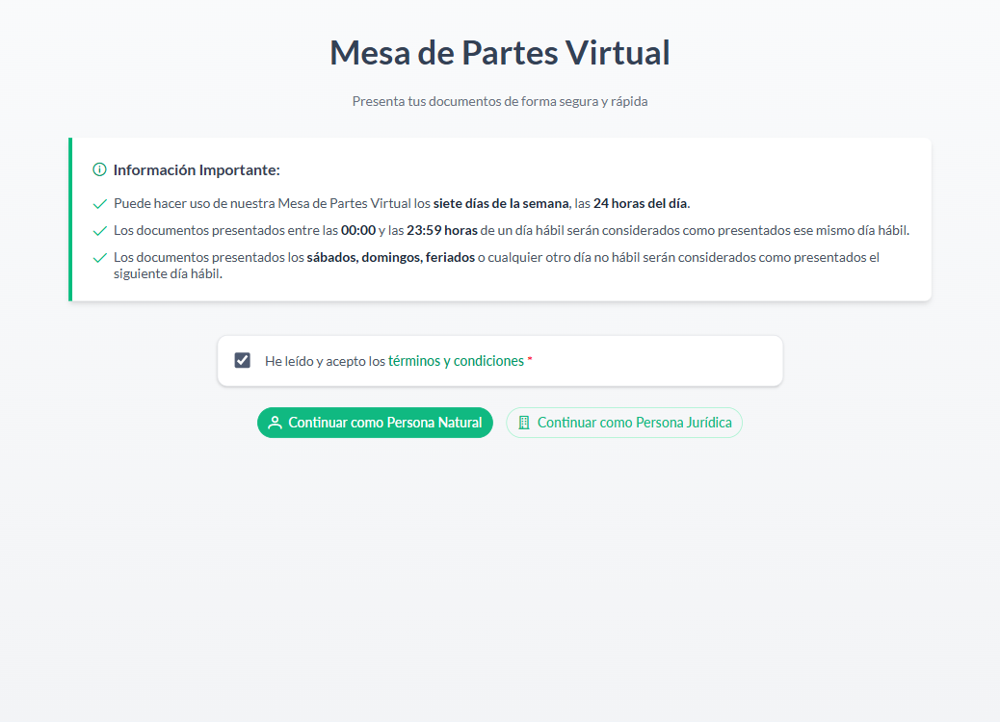
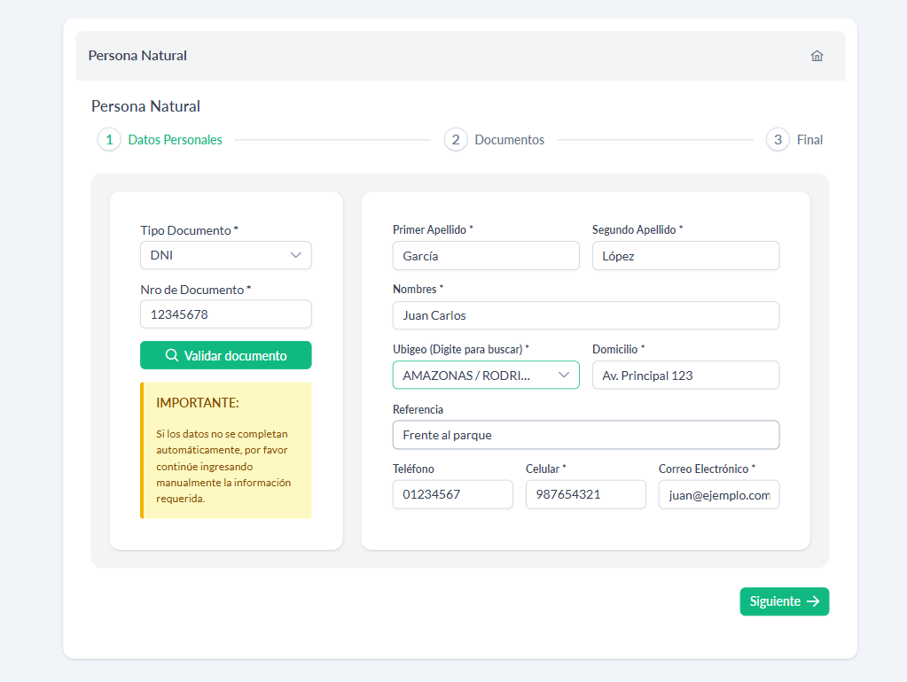
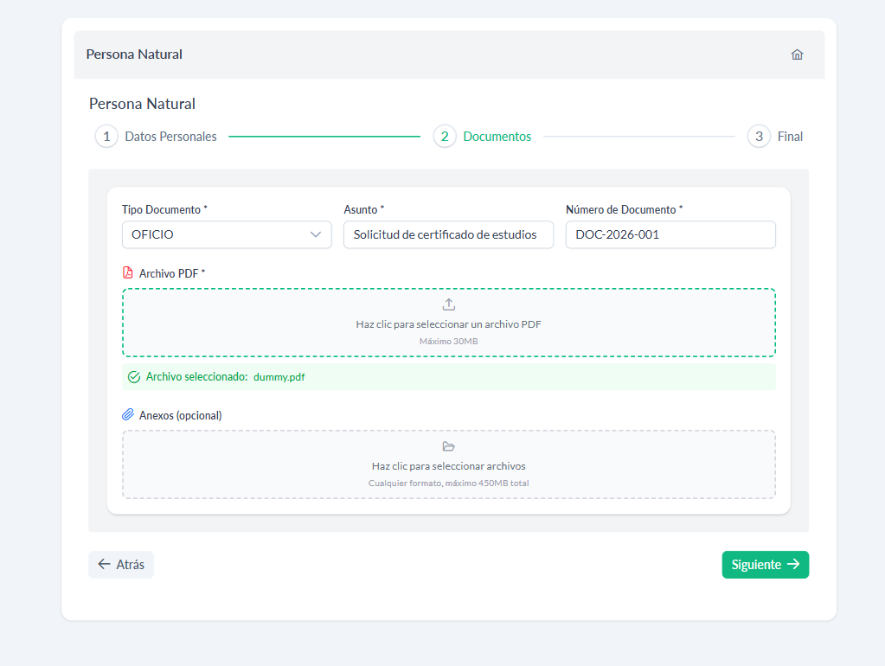
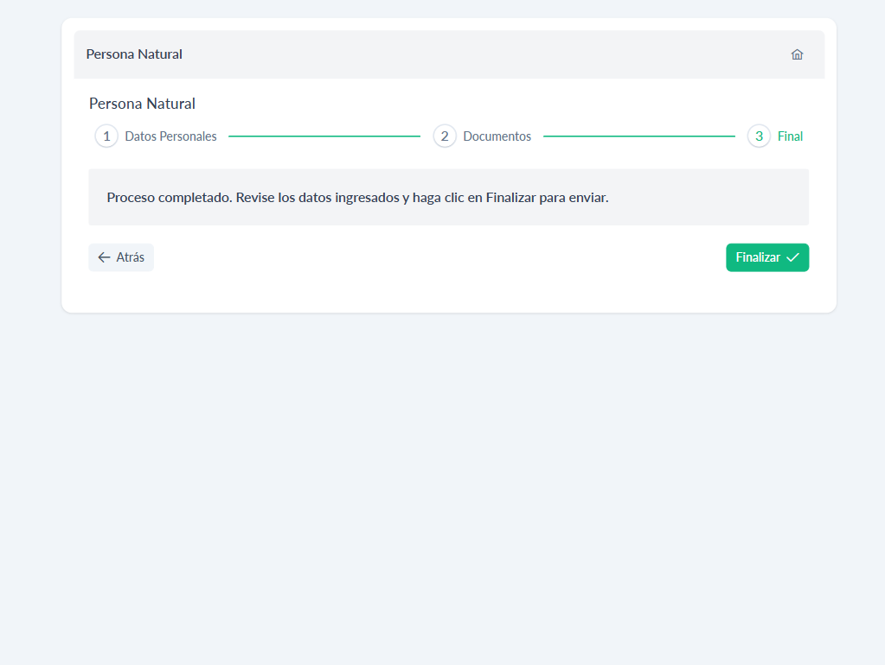
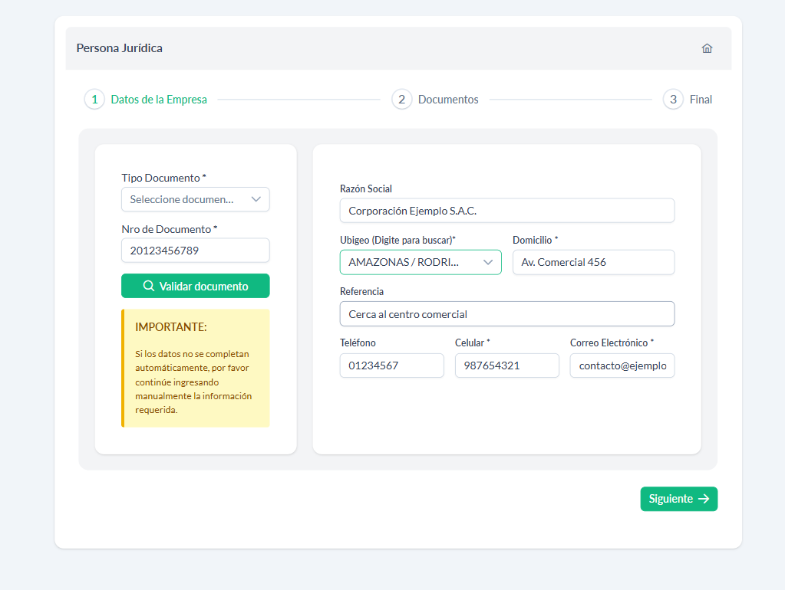

Manual de Usuario — Guía completa para el registro de documentos
Al ingresar a la plataforma verá la siguiente pantalla:

La página muestra:
El formulario se compone de 3 pasos. Puede navegar entre ellos usando los botones Siguiente y Atrás.
En este paso deberá ingresar sus datos personales. La pantalla se divide en dos secciones:

| Campo | Obligatorio | Descripción |
|---|---|---|
| Primer Apellido | Sí | Apellido paterno |
| Segundo Apellido | Sí | Apellido materno |
| Nombres | Sí | Nombres completos |
| Ubigeo | Sí | Digite para buscar departamento, provincia y distrito |
| Domicilio | Sí | Dirección actual |
| Referencia | No | Referencia adicional del domicilio |
| Teléfono | No | Teléfono fijo |
| Celular | Sí | Celular de contacto |
| Correo Electrónico | Sí | Correo válido para notificaciones |
Para el campo Ubigeo, comience a escribir el nombre del departamento, provincia o distrito. El sistema buscará automáticamente las opciones disponibles.
Una vez completado, presione "Siguiente" para ir al paso 2.
En este paso deberá adjuntar su documento y completar la información del trámite.

| Campo | Obligatorio | Descripción |
|---|---|---|
| Tipo Documento | Sí | Tipo de documento administrativo que presenta |
| Asunto | Sí | Motivo o tema del documento |
| Número de Documento | Sí | Número del documento que adjunta |
Presione "Siguiente" para ir al paso final.

Verá el mensaje:
Revise que todos sus datos sean correctos. Si necesita corregir algo, presione "Atrás" para volver a los pasos anteriores. Cuando todo esté conforme, presione "Finalizar".
El formulario también se compone de 3 pasos.

| Campo | Obligatorio | Descripción |
|---|---|---|
| Razón Social | No | Nombre de la empresa (se completa automáticamente) |
| Ubigeo | Sí | Digite para buscar departamento, provincia y distrito |
| Domicilio | Sí | Dirección fiscal de la empresa |
| Referencia | No | Referencia adicional de la dirección |
| Teléfono | No | Teléfono de la empresa |
| Celular | Sí | Celular de contacto |
| Correo Electrónico | Sí | Correo válido para notificaciones |
Presione "Siguiente" para continuar.
Los campos son idénticos a los del Paso 2 de Persona Natural:
Misma pantalla que Persona Natural. Revise los datos y presione "Finalizar" para enviar el expediente.
Cuando el envío sea exitoso, aparecerá una ventana emergente (modal) con la siguiente información:
Presione el botón "OK" para cerrar la ventana y ser redirigido automáticamente a la página de inicio.
| Elemento | Formato | Tamaño máximo |
|---|---|---|
| Documento principal | 30 MB | |
| Anexos | Cualquier formato | 450 MB en total |
| Situación | Mensaje |
|---|---|
| No selecciona tipo de documento | "Seleccione un tipo de documento" |
| No ingresa número de documento | "Ingrese un número de documento" |
| No adjunta archivo PDF | "Debe seleccionar un archivo PDF" |
| Archivo no es PDF | "Solo se permiten archivos PDF" |
| Archivo excede 30 MB | "El archivo no puede superar los 30MB" |
| Anexos exceden 450 MB | "Los anexos no pueden superar los 450MB en total" |
| Faltan campos obligatorios al finalizar | "Debe completar todos los campos obligatorios" |
| Error al buscar persona natural | "Persona no encontrada ingrese datos manualmente" |
| Error al buscar persona jurídica | "Persona jurídica no encontrada ingrese datos manualmente" |
Sí. La plataforma está disponible 24/7. Los documentos presentados en días no hábiles se consideran recibidos el siguiente día hábil.
Ingrese la información manualmente. El sistema validará que todos los campos obligatorios estén completos.
Sí. Puede adjuntar un archivo PDF principal (obligatorio) y múltiples anexos (opcional) de cualquier formato.
Aparecerá una ventana de confirmación con el mensaje "Registro Exitoso" y recibirá un correo electrónico con su número de expediente.
Una vez enviado el expediente no es posible modificarlo. Verifique todos los datos antes de presionar "Finalizar".
Sí. En cualquier momento puede presionar el ícono de casa ubicado en la esquina superior derecha de la pantalla para regresar al inicio. Los datos ingresados no se guardarán.